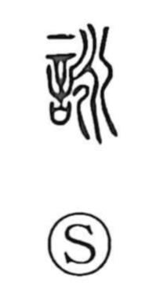

詠

Kun: yomu, utau, nagamu | On: ei
to chant ・ to recite poetry ・ to compose poetry ・ to sing
Explanation
詠 is a phono-semantic character: 言, “speech,” supplies the meaning, while 永 provides the sound value ei. In ancient imagery 永 depicts watercourses flowing together into a single, long current, an image of length and continuity. Brought into 詠, that sense of sustained flow becomes the voice held and prolonged in chanting. The character thus expresses the drawn-out recitation of poetry—Chinese verse and waka alike—and by extension the singing of such pieces and the act of composing them.